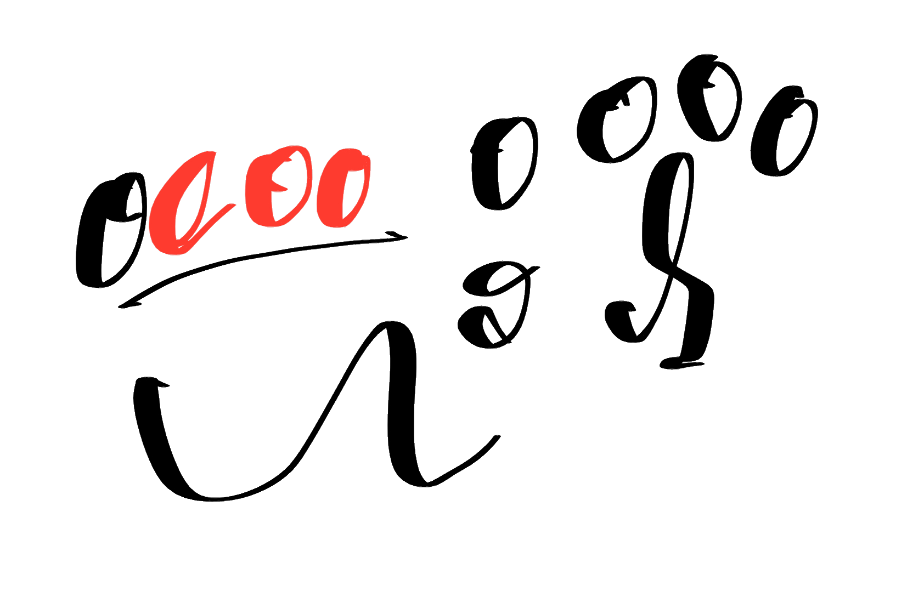

entrelampistas · término · pensamiento de mantenimiento · pantalla final · móvil 390 · desde sobre el proyecto y el feed
Pensamiento de mantenimiento
Una sola pantalla con scroll, mostrada completa. Texto verbatim de la autora. Fotos dentro del margen; un garabato al cierre; correo en bloque tinta al pie.
1atérmino · final
criterio · término
Pensamiento de mantenimiento
¿Cuándo revisaste por última vez lo que piensas?
Entrelampistas parte de una idea sencilla: lo que pensamos necesita trabajo. Revisarlo es una forma de cuidarnos y de cuidar lo que nos rodea.
Vivimos en piloto automático
Casi todo lo que decidimos en un día lo decidimos sin notarlo. Confiamos en nuestro juicio muchas más veces de las que estamos preparados para entender lo que juzgamos. El primer trabajo es darnos cuenta.
Somos ideas y actos
Lo que pensamos y lo que hacemos nos define más que lo que decimos de nosotros. Por eso revisar nuestras ideas y nuestras decisiones es la forma más directa de cambiar algo en nosotros y en nuestro entorno.
No optimizar, cuidar
Mantenimiento es el trabajo que hace falta para procurar, cuidar y sostener algo. Aplicado a nosotros significa revisar ideas, entornos y decisiones con constancia. No buscamos pensar más rápido ni rendir más.
Aprender también es revisar
Aprendemos para trabajar mejor y casi nunca para pensar mejor. Nos enseñan a sumar ideas nuevas y nadie nos enseña a revisar las que ya tenemos.
Estamos todos aquí
Sabemos menos de lo que creemos y lo que hacemos llega más lejos de lo que vemos. Este trabajo no se hace a solas: pide pausa, diálogo con nosotros mismos y conversación con otros. Nuestra actitud cuenta para el bien común.
Una forma de pensar activa, contextual y contemporánea
Hoy las tecnologías, los intereses y las circunstancias nos piden estar más presentes en cómo pensamos y en cómo nos implicamos con lo que nos rodea. Muchos entornos están diseñados para que no lo hagamos.

Queremos pensar con más pausa, más contexto y más conversación.

Únete
Te compartimos novedades y nuevos contenidos.
tu correo
suscribirme
ENTRELAMPISTAS · 2026
pliegue 844
decisiones
portada: foto con velo (pintor en la escalera) dentro del margen · meta «criterio · término» con la forma ■ del eje · la pregunta del título va debajo de la foto como entrada
seis ideas sin numerar: título 28 · cuerpo 16 gris · filete entre bloques (los números se reservan para ensayos y listas)
tres fotos dentro del margen: 01 gato en la valla · 03 bandeja y pared · 05 mural de manos a fondo completo con velo y el texto en papel encima (único bloque así: es la idea colectiva)
cierre con el garabato ocoo en tinta y la frase de la autora a 30
véase también con forma de eje: ○ habitabilidad e índice (entornos) · ■ sobre el proyecto
correo: mismo componente y mismos textos que en sobre el proyecto («únete» · «te compartimos novedades y nuevos contenidos»)
◆ pendiente · fotos no usadas guardadas en assets/pm-* (pintores en sala, hormiga con escalera, muro de azulejos) · las capturas de acordeón y progreso quedan fuera